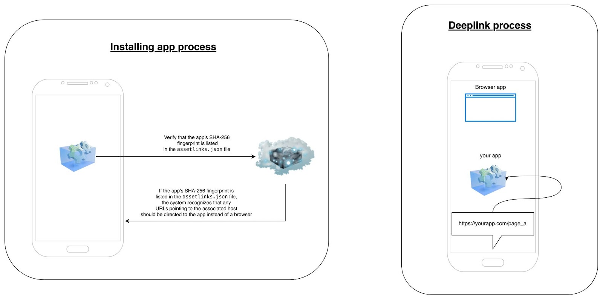

In this Codelab, you will gain insights into how a malicious actor might exploit the deep linking system of your Android application to access and compromise client data. Subsequently, you will learn methods to safeguard against such vulnerabilities while maintaining the functionality of deep linking.
brew install android-platform-toolsAn attacker may analyze your code to identify an Activity that is exposed to external interactions via deeplinks and could be exploited. They might then create their own application with an Activity configured to listen for the same deeplink path and scheme as yours.
When your marketing team sends a deeplink to this Activity, the operating system will prompt the user to choose between the two apps capable of handling the deeplink. If the attacker has successfully mimicked your app, their app will appear identical to yours in the app chooser. As a result, there is a 50% chance that users might select the attacker's app. This scenario is particularly concerning if the Activity involves collecting sensitive information, such as credit card details.
To demonstrate how an attacker might steal your deep links and compromise client data by extracting an APK from a device, you can follow these steps:
adb shell pm path com.example.appadb pull /data/app/com.example.app-1/base.apk ~/Desktop/com.example.app.apkunzip ~/Desktop/com.example.app.apk -d ~/Desktop/com.example.app_extractedNote:
- This process is typically used for reverse engineering or security testing. However, be aware that extracting and analyzing APKs without permission may violate terms of service and legal agreements. Always ensure you have the right to analyze the APK.
After extracting the APK file, here's how you can analyze it to find potentially vulnerable activities that might allow an attacker to steal your deep links:
Drag the APK file into an open Android Studio project,
Android Studio will decompile the APK, allowing you to view the contents, including the AndroidManifest.xml file.
In the APK Explorer or Project view, navigate to the root of the project and find the AndroidManifest.xml file.
<activity android:name=".YourActivityName" ... >
<intent-filter>
<action android:name="android.intent.action.VIEW" />
<category android:name="android.intent.category.BROWSABLE" />
<data
android:scheme="yourapp"
android:host="page_a" />
</intent-filter>
</activity>YourActivityName, all you need to do is redirect to the following deeplink: yourapp://page_a.Once you identify the target activity you wish to exploit, open Android Studio and create a new project.
In your project, create an activity with an intent filter that mirrors the target activity.
Make sure the scheme and host match exactly with the target activity. For example, if the intent filter of the target activity is defined like this:
<activity android:name=".YourActivityName" ... >
<intent-filter>
<action android:name="android.intent.action.VIEW" />
<category android:name="android.intent.category.BROWSABLE" />
<data
android:scheme="yourapp"
android:host="page_a" />
</intent-filter>
</activity>You must define yours in the same way.
This is the key to the entire compromise. When the OS processes a deep link, it searches all installed apps for those that match the scheme and host specified in the link.
If only one app matches, it will launch that app immediately. However, if multiple apps match, the OS will display a chooser, allowing the user to pick which app to open. If the attacker can convince the user that their app is the legitimate one, they can hijack the deep link. For instance, the user may receive a deep link via SMS from a real company, saying their password is about to expire. If the attacker has created a convincing fake app, the user might select it and unknowingly enter their real password.
This is the process we aim to demonstrate.
At this point, you should have a functioning project with an Activity designed to mimic the original one. Now, it's time to test it out.
Connect your device to your computer and run the following command:
adb shell am start -a android.intent.action.VIEW -d "<scheme>://<host>"In our example, you would run this:
adb shell am start -a android.intent.action.VIEW -d "yourapp://page_a"If everything works as expected, you should see a chooser appear, like this:
You've probably noticed that your app doesn't look convincing enough for the user to confuse it with the targeted app. To make the deception more effective, attackers typically use the same icon and string resources as the app they aim to imitate.
Let's do just that.
Icon:
Label:
For example:
<application
android:allowBackup="true"
android:dataExtractionRules="@xml/data_extraction_rules"
android:fullBackupContent="@xml/backup_rules"
android:icon="@mipmap/ic_launcher"
android:label="@string/app_name"
...
/>Now, test it by executing the deep link. Your app should look almost identical to the original, making it difficult for the user to tell if it's legitimate or not.
At this point, there's a 50% chance that the user might click on the attacker's app, thinking it's the legitimate one (possibly assuming there's an issue with their device showing duplicate entries in the app chooser). The attacker can make the fake app look very similar to the original, leading the user to trust it enough to input their sensitive data, which will be sent directly to the attacker.
So, what can we do to prevent this?
Google introduced a solution called App Links. The primary goal of this mechanism is to stop the user from having to choose between apps. In fact, it eliminates the app chooser entirely, so the user can't accidentally select the wrong app.
Whenever a user clicks a link verified to be associated with your app, the link will automatically open directly in your app, instead of launching the browser.
When the OS detects the android:autoVerify="true" parameter in the manifest during installation, it checks the associated link's host for a file named assetlinks.json.
The assetlinks.json file is a JSON document that contains the SHA256 fingerprints of the apps permitted to handle links from that host. If the fingerprint of the installed app matches one of the fingerprints in the assetlinks.json file, the verification is successful. From then on, the OS will always open that link in the app without redirecting it to the browser.
